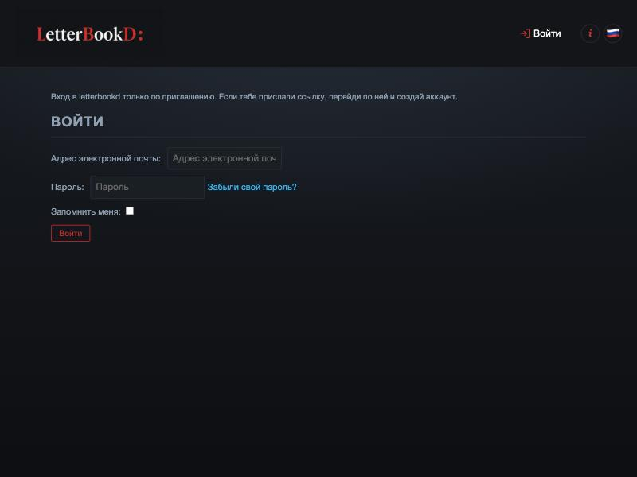

Вход
Зачем это нужно: Войти в свой клуб. letterbookd закрыт: доступ открывается по ссылке-приглашению. Если тебе прислали ссылку, перейди по ней; если нет, используй эту страницу, чтобы вернуться в свой аккаунт.

Как это устроено
Ты попадёшь сюда, если не вошёл в систему, или нажав «Вход» в правом верхнем углу. Введи e-mail своего аккаунта и пароль, затем нажми «Вход». Можешь поставить галочку «Запомнить меня», чтобы оставаться в системе в этом браузере. Ссылка «Забыли пароль?» отправляет письмо для сброса; вернёшься сюда уже с новым паролем. После входа ты попадёшь на главную.
Цепочки действий
Каждая строка — это триггер в интерфейсе, модалка или форма, которые он открывает, и результат.
| Триггер | Модалка / Поля | Эффект |
|---|---|---|
| Кнопка «Вход» (основная форма) | E-mail (обязательно), Пароль (обязательно), «Запомнить меня» (галочка, необязательно) | Сессия открывается, переход на главную. При ошибке форма перезагрузится с понятным сообщением (неизвестный адрес, неверный пароль). |
| Ссылка «Забыли пароль?» | Форма запроса по e-mail (отдельная страница) | На указанный адрес приходит ссылка для сброса. Перейди по ней, выбери новый пароль и войди снова. |